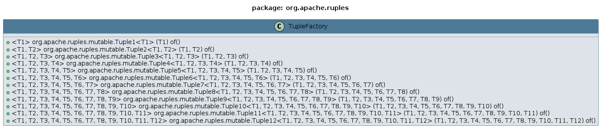

Package org.apache.ruples
Class TupleFactory
java.lang.Object
org.apache.ruples.TupleFactory
Factory convenient methods for mutable Tuples.
Class Diagram:

- Since:
- 2024-1117
- Author:
- ClusterBR
-
Constructor Summary
Constructors -
Method Summary
Modifier and TypeMethodDescriptionstatic <T1> Tuple1<T1>of(T1 v1) Factory method for Tuple1static <T1,T2> Tuple2<T1, T2> of(T1 v1, T2 v2) Factory method for Tuple2static <T1,T2, T3> Tuple3<T1, T2, T3> of(T1 v1, T2 v2, T3 v3) Factory method for Tuple3static <T1,T2, T3, T4>
Tuple4<T1,T2, T3, T4> of(T1 v1, T2 v2, T3 v3, T4 v4) Factory method for Tuple4static <T1,T2, T3, T4, T5>
Tuple5<T1,T2, T3, T4, T5> of(T1 v1, T2 v2, T3 v3, T4 v4, T5 v5) Factory method for Tuple5static <T1,T2, T3, T4, T5, T6>
Tuple6<T1,T2, T3, T4, T5, T6> of(T1 v1, T2 v2, T3 v3, T4 v4, T5 v5, T6 v6) Factory method for Tuple6static <T1,T2, T3, T4, T5, T6, T7>
Tuple7<T1,T2, T3, T4, T5, T6, T7> of(T1 v1, T2 v2, T3 v3, T4 v4, T5 v5, T6 v6, T7 v7) Factory method for Tuple7static <T1,T2, T3, T4, T5, T6, T7, T8>
Tuple8<T1,T2, T3, T4, T5, T6, T7, T8> of(T1 v1, T2 v2, T3 v3, T4 v4, T5 v5, T6 v6, T7 v7, T8 v8) Factory method for Tuple8static <T1,T2, T3, T4, T5, T6, T7, T8, T9>
Tuple9<T1,T2, T3, T4, T5, T6, T7, T8, T9> of(T1 v1, T2 v2, T3 v3, T4 v4, T5 v5, T6 v6, T7 v7, T8 v8, T9 v9) Factory method for Tuple9static <T1,T2, T3, T4, T5, T6, T7, T8, T9, T10>
Tuple10<T1,T2, T3, T4, T5, T6, T7, T8, T9, T10> of(T1 v1, T2 v2, T3 v3, T4 v4, T5 v5, T6 v6, T7 v7, T8 v8, T9 v9, T10 v10) Factory method for Tuple10static <T1,T2, T3, T4, T5, T6, T7, T8, T9, T10, T11>
Tuple11<T1,T2, T3, T4, T5, T6, T7, T8, T9, T10, T11> of(T1 v1, T2 v2, T3 v3, T4 v4, T5 v5, T6 v6, T7 v7, T8 v8, T9 v9, T10 v10, T11 v11) Factory method for Tuple11static <T1,T2, T3, T4, T5, T6, T7, T8, T9, T10, T11, T12>
Tuple12<T1,T2, T3, T4, T5, T6, T7, T8, T9, T10, T11, T12> of(T1 v1, T2 v2, T3 v3, T4 v4, T5 v5, T6 v6, T7 v7, T8 v8, T9 v9, T10 v10, T11 v11, T12 v12) Factory method for Tuple12
-
Constructor Details
-
TupleFactory
public TupleFactory()
-
-
Method Details
-
of
Factory method for Tuple1- Type Parameters:
T1- - data-type 1- Parameters:
v1- - value 1- Returns:
- a mutable Tuple containing 1 value
-
of
Factory method for Tuple2- Type Parameters:
T1- - data-type 1T2- - data-type 2- Parameters:
v1- - value 1v2- - value 2- Returns:
- a mutable Tuple containing 2 values
-
of
Factory method for Tuple3- Type Parameters:
T1- - data-type 1T2- - data-type 2T3- - data-type 3- Parameters:
v1- - value 1v2- - value 2v3- - value 3- Returns:
- a mutable Tuple containing 3 values
-
of
Factory method for Tuple4- Type Parameters:
T1- - data-type 1T2- - data-type 2T3- - data-type 3T4- - data-type 4- Parameters:
v1- - value 1v2- - value 2v3- - value 3v4- - value 4- Returns:
- a mutable Tuple containing 4 values
-
of
Factory method for Tuple5- Type Parameters:
T1- - data-type 1T2- - data-type 2T3- - data-type 3T4- - data-type 4T5- - data-type 5- Parameters:
v1- - value 1v2- - value 2v3- - value 3v4- - value 4v5- - value 5- Returns:
- a mutable Tuple containing 5 values
-
of
public static <T1,T2, Tuple6<T1,T3, T4, T5, T6> T2, ofT3, T4, T5, T6> (T1 v1, T2 v2, T3 v3, T4 v4, T5 v5, T6 v6) Factory method for Tuple6- Type Parameters:
T1- - data-type 1T2- - data-type 2T3- - data-type 3T4- - data-type 4T5- - data-type 5T6- - data-type 6- Parameters:
v1- - value 1v2- - value 2v3- - value 3v4- - value 4v5- - value 5v6- - value 6- Returns:
- a mutable Tuple containing 6 values
-
of
public static <T1,T2, Tuple7<T1,T3, T4, T5, T6, T7> T2, ofT3, T4, T5, T6, T7> (T1 v1, T2 v2, T3 v3, T4 v4, T5 v5, T6 v6, T7 v7) Factory method for Tuple7- Type Parameters:
T1- - data-type 1T2- - data-type 2T3- - data-type 3T4- - data-type 4T5- - data-type 5T6- - data-type 6T7- - data-type 7- Parameters:
v1- - value 1v2- - value 2v3- - value 3v4- - value 4v5- - value 5v6- - value 6v7- - value 7- Returns:
- a mutable Tuple containing 7 values
-
of
public static <T1,T2, Tuple8<T1,T3, T4, T5, T6, T7, T8> T2, ofT3, T4, T5, T6, T7, T8> (T1 v1, T2 v2, T3 v3, T4 v4, T5 v5, T6 v6, T7 v7, T8 v8) Factory method for Tuple8- Type Parameters:
T1- - data-type 1T2- - data-type 2T3- - data-type 3T4- - data-type 4T5- - data-type 5T6- - data-type 6T7- - data-type 7T8- - data-type 8- Parameters:
v1- - value 1v2- - value 2v3- - value 3v4- - value 4v5- - value 5v6- - value 6v7- - value 7v8- - value 8- Returns:
- a mutable Tuple containing 8 values
-
of
public static <T1,T2, Tuple9<T1,T3, T4, T5, T6, T7, T8, T9> T2, ofT3, T4, T5, T6, T7, T8, T9> (T1 v1, T2 v2, T3 v3, T4 v4, T5 v5, T6 v6, T7 v7, T8 v8, T9 v9) Factory method for Tuple9- Type Parameters:
T1- - data-type 1T2- - data-type 2T3- - data-type 3T4- - data-type 4T5- - data-type 5T6- - data-type 6T7- - data-type 7T8- - data-type 8T9- - data-type 9- Parameters:
v1- - value 1v2- - value 2v3- - value 3v4- - value 4v5- - value 5v6- - value 6v7- - value 7v8- - value 8v9- - value 9- Returns:
- a mutable Tuple containing 9 values
-
of
public static <T1,T2, Tuple10<T1,T3, T4, T5, T6, T7, T8, T9, T10> T2, ofT3, T4, T5, T6, T7, T8, T9, T10> (T1 v1, T2 v2, T3 v3, T4 v4, T5 v5, T6 v6, T7 v7, T8 v8, T9 v9, T10 v10) Factory method for Tuple10- Type Parameters:
T1- - data-type 1T2- - data-type 2T3- - data-type 3T4- - data-type 4T5- - data-type 5T6- - data-type 6T7- - data-type 7T8- - data-type 8T9- - data-type 9T10- - data-type 10- Parameters:
v1- - value 1v2- - value 2v3- - value 3v4- - value 4v5- - value 5v6- - value 6v7- - value 7v8- - value 8v9- - value 9v10- - value 10- Returns:
- a mutable Tuple containing 10 values
-
of
public static <T1,T2, Tuple11<T1,T3, T4, T5, T6, T7, T8, T9, T10, T11> T2, ofT3, T4, T5, T6, T7, T8, T9, T10, T11> (T1 v1, T2 v2, T3 v3, T4 v4, T5 v5, T6 v6, T7 v7, T8 v8, T9 v9, T10 v10, T11 v11) Factory method for Tuple11- Type Parameters:
T1- - data-type 1T2- - data-type 2T3- - data-type 3T4- - data-type 4T5- - data-type 5T6- - data-type 6T7- - data-type 7T8- - data-type 8T9- - data-type 9T10- - data-type 10T11- - data-type 11- Parameters:
v1- - value 1v2- - value 2v3- - value 3v4- - value 4v5- - value 5v6- - value 6v7- - value 7v8- - value 8v9- - value 9v10- - value 10v11- - value 11- Returns:
- a mutable Tuple containing 11 values
-
of
public static <T1,T2, Tuple12<T1,T3, T4, T5, T6, T7, T8, T9, T10, T11, T12> T2, ofT3, T4, T5, T6, T7, T8, T9, T10, T11, T12> (T1 v1, T2 v2, T3 v3, T4 v4, T5 v5, T6 v6, T7 v7, T8 v8, T9 v9, T10 v10, T11 v11, T12 v12) Factory method for Tuple12- Type Parameters:
T1- - data-type 1T2- - data-type 2T3- - data-type 3T4- - data-type 4T5- - data-type 5T6- - data-type 6T7- - data-type 7T8- - data-type 8T9- - data-type 9T10- - data-type 10T11- - data-type 11T12- - data-type 12- Parameters:
v1- - value 1v2- - value 2v3- - value 3v4- - value 4v5- - value 5v6- - value 6v7- - value 7v8- - value 8v9- - value 9v10- - value 10v11- - value 11v12- - value 12- Returns:
- a mutable Tuple containing 12 values
-